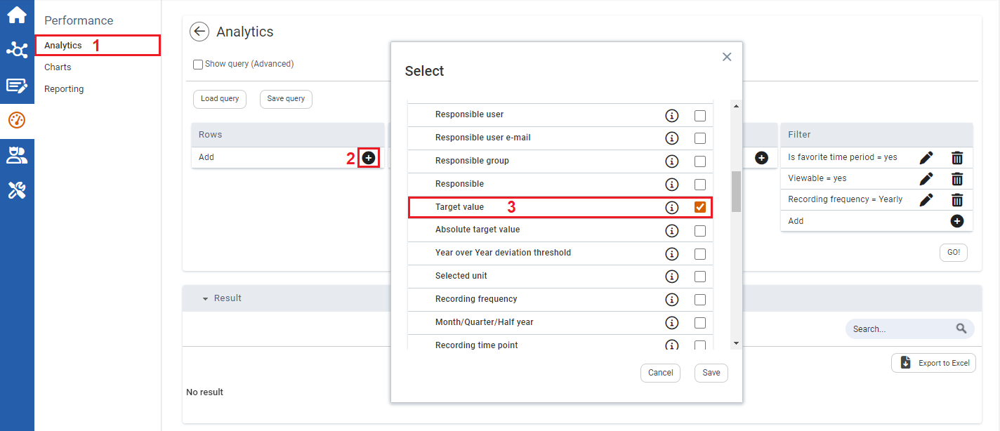
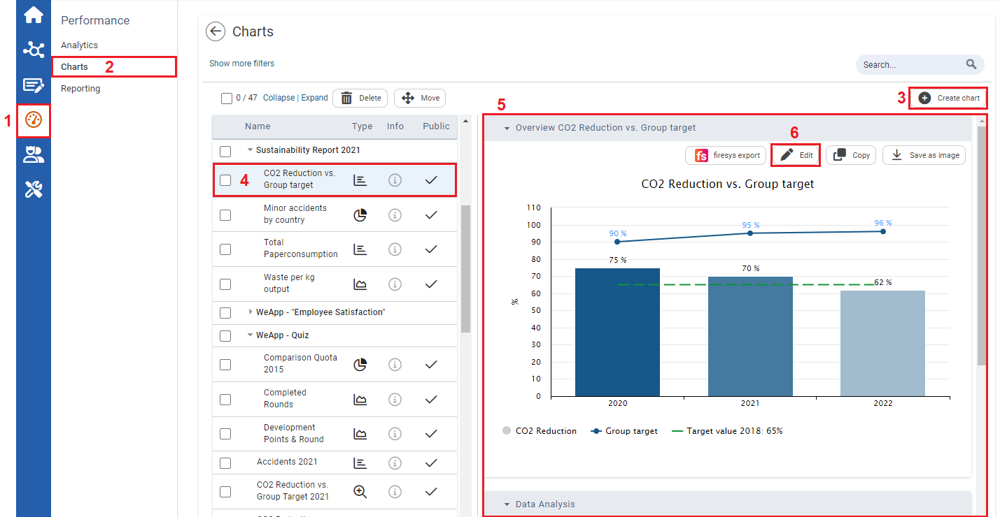
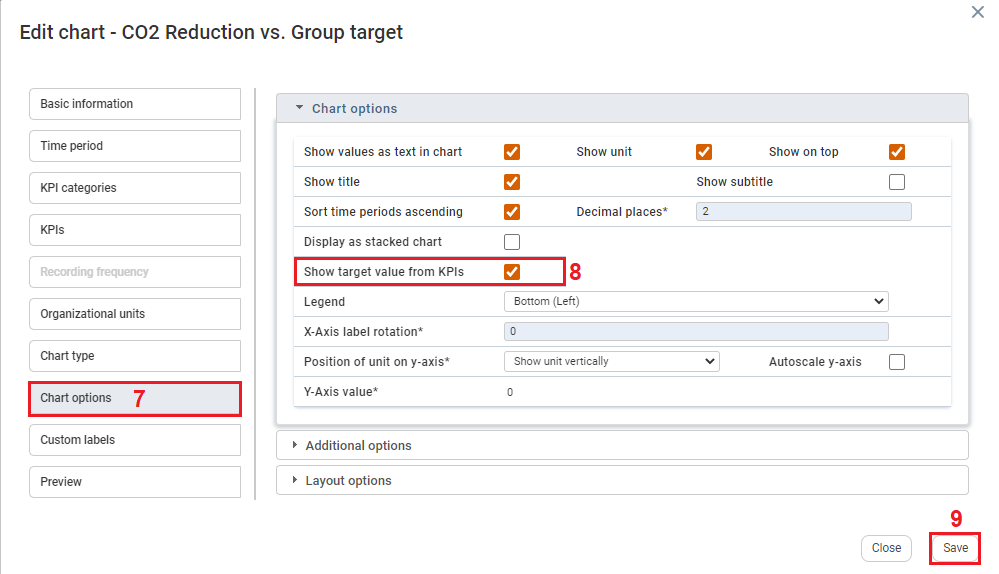

In the Standards & KPI module, target KPI values can be input. These target KPI values can be displayed in analytic queries and in charts, providing users with visual comparison against actual KPI values.
To enable target values:

| 1 | In the Performance area, click the Analytics module. |
| 2 | In the table at the top, click the plus icon. |
| 3 | Select the Target value checkbox and click Save. |
To view target values in the form of a chart:

| 1 | On the left navigation panel, click Performance. |
| 2 | Click Chart. |
| 3 | To create a new chart, click + Create Chart. |
| 4 | To select an existing chart, click a chart from the list provided. |
| 5 | Overview of the chart will display as a graph to the right when an existing chart is selected. |
| 6 | Click Edit to edit an existing chart. The Edit chart window opens. |

| 7 | On the Edit Chart window, click on the Chart options tab. |
| 8 | Select Show target value from KPIs checkbox. Target values inputted in the Standards & KPIs module, will display in the chart. |
| 9 | Click Save. |